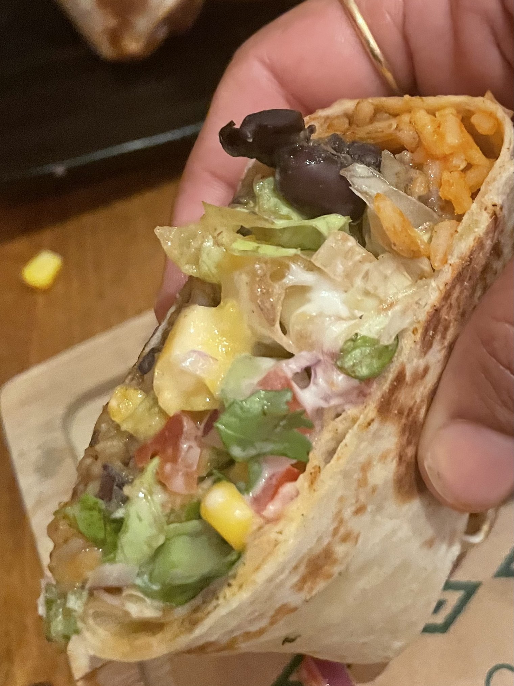

Burritos creativos
Ingredientes
1×
- 1 cda de harina de garbanzo
- 1 cda de harina de quinoa
- 1 cda de sagú
- agua
- sal
- lima
- arroz
- frijoles
- aguacate
- tomate
- cilantro
- col lombarda
- berenjena asada
- albahaca
- tomatitos
- lechuga
- maíz
- pico de gallo
- queso crema

Preparación
Paso 1
Juntar las harinas, por ejemplo 1 cda de harina de garbanzo, 1 cda de harina de quinoa y 1 cda de sagú por persona, con agua y sal, y ponerlo en la sartén (tipo crepe).
Paso 2
Cuando esté lista, añadir todos los ingredientes y un toque de lima si queremos:
- arroz, frijoles, aguacate, tomate crudo, cilantro y col lombarda;
- o arroz, aguacate, berenjena asada, albahaca, tomatitos y col lombarda;
- o arroz, frijoles, lechuga, maíz, pico de gallo y queso crema u otro.
Paso 3
Enrollar y servir.